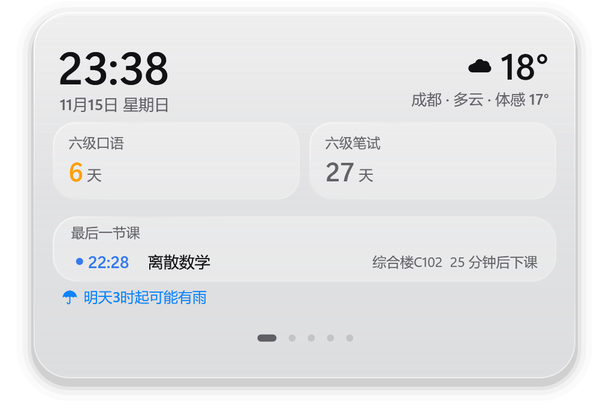
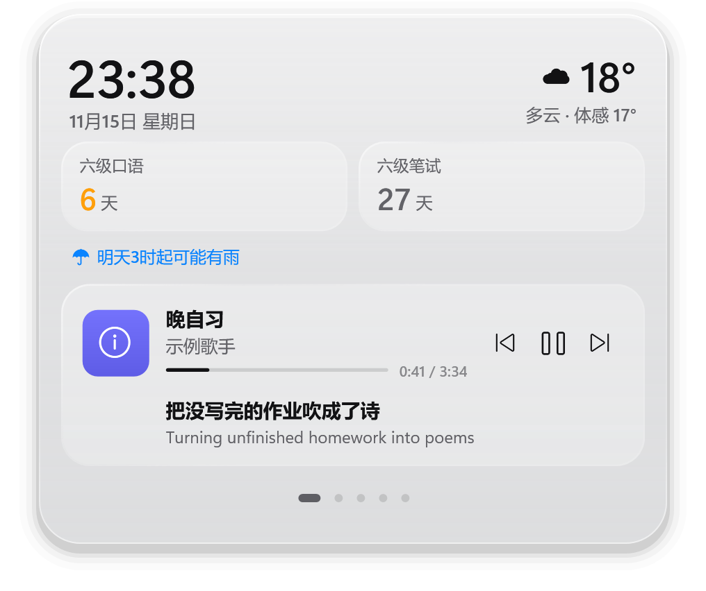
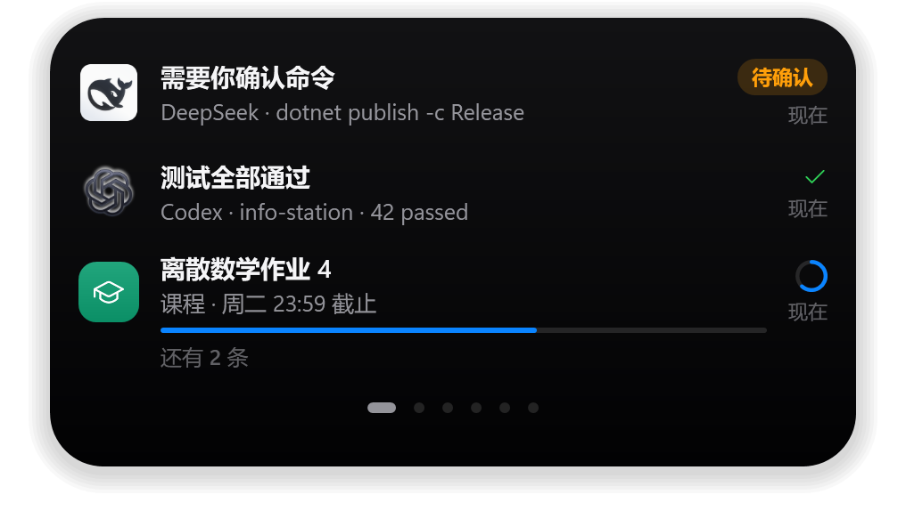
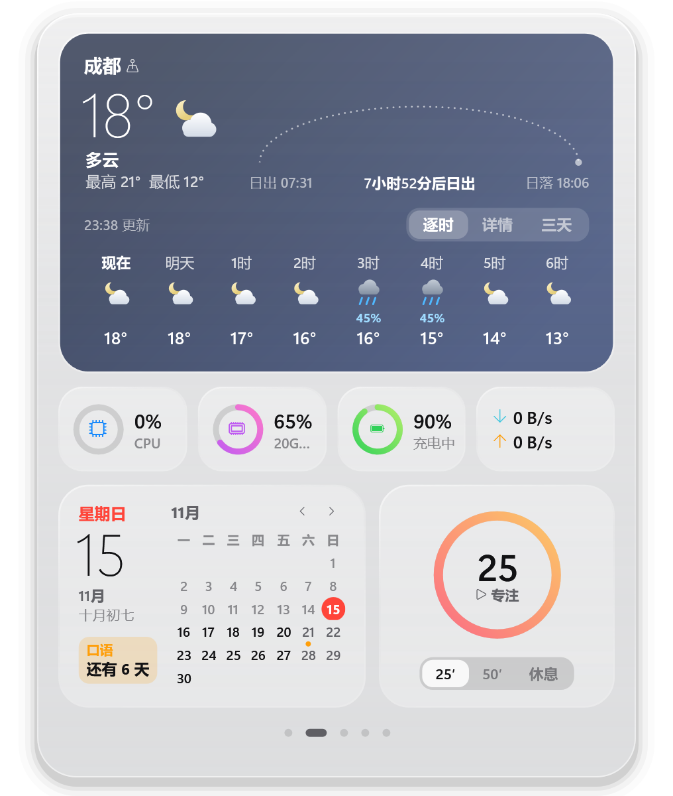
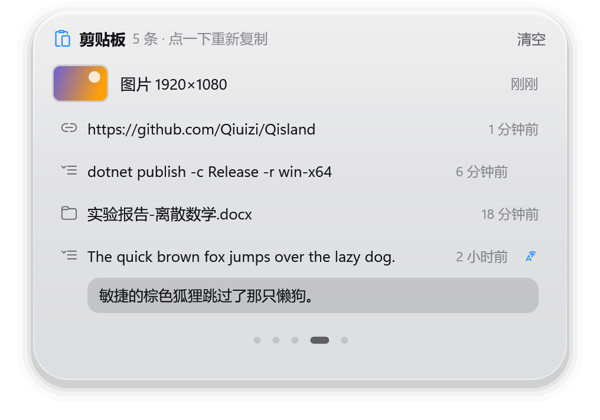
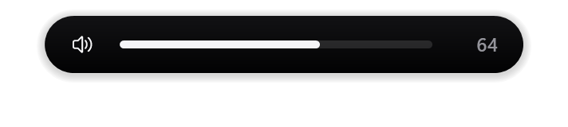

Qisland
给 Windows 做的灵动岛。现在，它开始替你记事。

给 Windows 做的灵动岛。现在，它开始替你记事。
下节课、快截止的作业、Agent 要你点头的命令、正在放的歌。它们按轻重排好，只在需要时展开。

托盘里导入 .ics 课表。上课时胶囊显示进度，课前 10 分钟轻轻弹一下，主页告诉你今天还有几节课。
雨课堂、学习通扫码登录，低频只读获取作业截止时间。24 小时内上岛，3 小时内变红。凭据加密存在本机，不存密码，不签到、不刷课、不答题。


允许、拒绝或回终端，一次点击。额度圆环显示 5 小时和本周用量。默认关闭，托盘里打开。
QQ 音乐、网易云、酷狗、酷我、Spotify、Apple Music 和浏览器视频，封面、进度、逐行歌词都在岛上，暂停切歌不用翻出播放器。

Windows 灵动岛用一天就会遇到的问题，先解决，再加功能。
透明大窗口会吞掉点击。Qisland 把可点击区域收紧到岛本身，其余像素全部穿透给下面的程序。
识别全屏游戏和演示模式自动隐藏，Ctrl+Alt+Q 随时叫回。按进程名配置白名单和黑名单。
只有动画在跑时才启动帧循环，其余时间几乎不占资源。
读取显示器刷新率驱动弹簧动画，页面预热缓存，翻页时整页转成位图只做平移。
系统亚克力裁不出胶囊。Qisland 自己截取岛背后的画面做模糊，截屏和模糊都在后台线程，展开全程都有通透质感。
开机自启，崩溃后自动重启；一分钟内重复崩溃就停下，不会死循环。
滚轮切换，收起时自动回到主页。

编程助手等你确认的命令、刚跑完的测试、快截止的作业、群消息，一屏看完。点一下直接跳到对应窗口。
天气、待办、剪贴板、日历、专注、系统状态，每个都是小组件。点「编辑组件」决定开哪些、怎么排，半宽的两两并排。


最近 30 条文字和文件，点一下重新复制。只存在内存里，并尊重密码管理器的“不进历史”标记。

音量键接管：岛上显示音量条，插上耳机会告诉你。
插拔电源、20% 和 10% 低电量、充满提醒。
跟随前台窗口所在的屏幕，按每块屏的 DPI 居中。
资源管理器复制和浏览器下载显示进度，完成后一键定位文件。
Claude Code、Codex、DSH、豆包、Trae、WorkBuddy，跑完、出错、等确认都会上岛。
三天内的考试直接显示在胶囊上。
图片也进历史，文字一键翻译；日历显示农历和节日。
127.0.0.1:9840，兼容 WinIslands 协议，脚本一行推送。
需要 Windows 10/11 和 .NET 8 桌面运行时。下载、解压、运行 Qisland.exe。